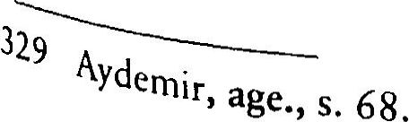

Dolaysısıyla Menderes’e göre halkın kabul etmediği devrimleri korumaya da gerek yoktur. Bu mantıkla DP döneminde birçok Ata türk devrimi gericilerin saldırılarına karşı savunmasız bırakılmıştır. Hatta Menderes, kendince “halka mal olmadığına” inandığı devrimle ri ortadan kaldırmak için bizzat hareket etmiştir. Örneğin 13 Haziran 1950 tarihinde şöyle demiştir: “Millete mal olmamış, millet vicdanında bir değirmen taşı ağırlığıyla çökmüş olan bazı tedbirleri ortadan kal dıracağız. Millet vicdanına baskı yapmakta olan birtakım tedbirlerin, 1520 sene sonra üzerinde bekçi gibi duracağız, onları mutlaka muha faza edeceğiz demek doğru olmaz”
Görüldüğü gibi Menderes bazı Atatürk devrimlerini “millet vic danında çökmüş bir değirmen taşı!” olarak adlandırarak o devrimleri korumayacağını bizzat ifade etmiştir. Konuşmanın yapıldığı tarihe ba kılacak olursa bu “değirmen taşının” Türkçe ezan olduğu anlaşılmak tadır. Nitekim 3 gün sonra TBMM’de Arapça ezanla ilgili düzenleme yapılmıştır.
Menderes, DP Kırşehir İl Kongresi’nde 11 Mayıs 1953’te “millete mal olmuş devrimleri” şöyle sıralamıştır:
“Medeni Kanun’un taalluk ettiği sahadaki hukuki inkılâbın tama mıyla korunacağından kimsenin şüphesi olmamalıdır. Harf inkılâbı, kıyafet inkılâbı ve buna benzer medeni ve cemiyetin hayrına ve yüksel mesine yönelik olan bütün teşekküre değer inkılâplar elbette tamamıy la korunacaktır. ”
“Millete mal olmuş inkılâplarımızın korunması ise birinci vazife mizdir. Kapatılan tekkelerin açılması, kıyafette ve yaşayışta ortaçağ bir cemiyetin âdet ve ananelerine dönülmesi, eski harflerin geri getirilmesi asla söz konusu olamaz.”
Buradan anlaşıldığı kadarıyla Menderes, Atatürk’ün dinle ilgili devrimlerini “millete mal olmamış devrimler” arasında kabul etmiştir. Oysaki gerek Kur’anı Kerim’in ve hadis kaynaklarının Türkçeleşti rilmesi, gerekse hutbe ve ezanın Türkçeleştirilmesi bazı aşırı gruplar dışında Türk halkının büyük çoğunluğu tarafından kabul edilerek benimsenmiştir. Ancak din istismarı yaparak oy almayı amaçlayan Menderes, bu gerçeği görmezlikten gelmiştir. Ayrıca Türk Devrimi, Atatürk’ün birbirini tamamlayan bir dizi devrimiyle anlamlı bir bütün dür. Devrimler ayrı ayrı değil bu bütünsellik içinde değerlendirilmeli dir. Ancak Menderes, bazı devrimleri korumayarak, hatta o devrimleri bizzat ortadan kaldırarak Türk Devrimi’nin bütünselliğini bozmuştur.
Atatürk devrimlerini, “Millete mal olanlar ve olmayanlar” diye ikiye ayıran Menderes, “millete mal olmayan devrimleri” bizzat kendi si yok ederken, “millete mal olanları” da Necip Fazıl gibi örtülü öde nekten beslediği Karşı Devrimci kişilere yok ettirmek istemiştir. Nite kim Menderes’in “Millete mal olmuştur, bu nedenle korunmalıdır!” dediği Medeni Kanun, Harf devrimi. Kılık kıyafet (şapka) devrimi. Tekke ve zaviyelerin kapatılması gibi devrimler, Menderes’in kanatla rı altındaki Necip Fazıl’ın Büyük Doğu dergisindeki çarpıtılmış tarih tezleriyle yok edilmeye çalışılmıştır. İşin ilginç tarafı harf, dil, tekkeler ve kıyafet devrimlerinin korunacağım söyleyen Menderes, türbeleri aç mış ve dil devrimine zarar vermiştir. 1945 yılında İnönü döneminde Öz Türkçeleştirilen Anayasa 1952’de Menderes döneminde yine Osmanlı caya çevrilmiştir. 9 Temmuz 1951’de de okul kitaplarından “acayip” kelimeler çıkarılarak yerlerine “yaşayan Türkçe kelimeler” konulması için iki komisyon kurulmuştur. Garipliğe bakın ki, “acayip” denilen kelimeler Türkçe, “yaşayan Türkçe” denilen kelimeler ise Arapça veya Farsçadır.
Menderes'in en önemli özelliği alm bir kere bile secdeye gelme miş olsa dasiyaseten dindar görünmesidir. Erken Cumhuriyet dönemi eleştirilerinde de hep dinden söz etmiştir. Atatürk’ün ve İnönü’nün dini baskı altına aldıklarım söyleyerek kendisinin dini, baskıdan kurtardığı nı belirtmiştir. 1951’de DP İzmir İl Kongresi’nde şöyle demiştir: “Şim diye kadar baskı altında bulunan dinimizi baskıdan kurtardık. İnkılâp softalarının yaygaralarına ehemmiyet vermeyerek ezanı Arapçalaştır dık. Türkiye bir Müslüman devlettir ve Müslüman kalacaktır. Müslü manlığın bütün icapları yerine getirilecektir.” Menderes, Türkiye’de ezanın Arapça değil Türkçe okunmasını “dini baskı altında tutmak!” ve “Müslümanlığa karşı olmak!” diye değerlendirerek düpedüz ger çekleri çarpıtmış, yalan söylemiştir. Menderes’in bu sözlerini duyan da Atatürk’ün ve İnönü’nün ezanları yasakladığını, 19231950 arasın da ezan okunmadığını sanır. Ancak bilindiği gibi 19231950 arasında ezanlar gürül gürül hem de anladığımız dilden Türkçe okunmuş, ca miler açık olmuş, Kur’anlar okunmuş, dualar edilmiş, dini bayramlar kutlanmaya devam etmiştir. Ezanın dilini yeniden Arapçaya çeviren, üstelik bunu CHP ile birlikte yapan Menderes’in, kendisini topluma “Türkiye’de Müslümanlığı kurtaran adam!” olarak tanıtması düpedüz istismardır.
Menderes özünde en önemli Atatürk devrimlerinden biri olan laikliğe de karşıdır, ama yine taktik gereği laikliğe toptan karşı ol maktansa anlamı üzerinde oynayarak laikliği aşındırmayı denemiş tir. Örneğin laikliğin “Din ve devlet işlerinin birbirinden ayrılması”, “Toplumda irticanın etkisinin kırılması”, “Dinsel ilkeler yerine akıl ve bilim ilkelerinin ön plana çıkarılması” gibi anlamlarından neredeyse hiç söz etmeden laikliği sadece “Din ve vicdan özgürlüğüne” indirgeme yoluna gitmiştir. Ona göre Türkiye’de “irtica tehlikesi” diye bir şey de yoktur! Devrimler artık yerleşmiştir, bu nedenle devrimleri irticadan korumak için mücadele etmek anlamsızdır! Laiklik dine ve dindarlara baskı değil, din ve vicdan özgürlüğüdür, ancak Türkiye’de öteden beri hep dine ve dindarlara baskı olarak anlatılmıştır!
1952’de Kayseri’de şöyle demiştir: “Bu memlekette irtica vardır, demek sizlere kitle halinde geri fikirde, muataassıp... geri bir cemiyet siniz demektir. Bu Türk cemiyetine hakarettir. Sizleri müdafaa ederek adınıza haykırıyorum: Türk milleti mutaassıp değildir...”
1952’de Adana’da da şöyle demiştir: “Türk milleti Miislümandır ve Müslüman kalacaktır. Bu memlekette vicdan hürriyetine tecavüz etmek kimsenin hakkı değildir. Laikliği din aleyhtarlığı, düşmanlığı şeklinde anlamak bizim iktidarımızın vicdan hürriyeti anlayışına asla uygun değildir...”
Menderes, 29 Kasım 1955’te Meclis’te milletvekillerine hitaben, “Sız isterseniz hilafeti bile geri getirebilirisinizdemiştir. Menderes bu sözüyle bir taraftan milletvekillerinin gücüne işaret etmek isterken, diğer taraftan bilinçaltındaki devrim karşıtlığını gözler önüne sermiştir.
Menderes, kendinden sonraki tüm sağcı iktidarların yapacağı gibi Müslümana Müslüman propagandası yapmıştır.
Menderes’in erken Cumhuriyet dönemi eleştirilerinin temel ne deni siyasi rakibi CHP’yi yıpratmaktır. Bu nedenle CHP tarihine sal dırmıştır. CHP tarihine saldırınca da ister istemez Kurtuluş Savaşı’na, Türk Devrimi’ne, Atatürk’e ve İnönü’ye saldırmak zorunda kalmıştır.
Menderes, 4 Mayıs 1951’deki konuşmasında, Atatürk’ün CHP’ye yüklediği misyonu şöyle eleştirmiştir: “Bütün bir milletin Halk Partisi içinde muhtevi ve mündemiç bulunduğunu farz ve hayal etmekle baş layan enaniyet (benlik) ve gafletler onları, hakikatleri bir türlü göreme yecek hale getirmiştir. ”
Menderes’in bu eleştirisini Şevket Süreyya Aydemir şöyle değer lendirmiştir: “Evet, bütün milleti Halk Partisi’nde birleşmiş, toplan mış gören (hayal eden) biri vardı. Ve bütün milletin Halk Partisi’nde kaynaşmış olduğunu ifade eden O’ydu. Bu da Mustafa Kemal’dir. Bu sözleri o, Halk Partisi’ni kurarken beyan ve ifade etti. Mustafa Kemal'e göre Halk Partisi, halkın müşterek menfaatlerini koruyacaktı. Milletin heyeti umumiyesi bu partide milli çıkarlarını bulacaktı. Ama bu söz terin söylendiği sene, henüz 1923’tii. Ve hu sözlerde ne hir gaflet ne bir benlik havası vardı. Gerçi Menderes’in muhalif bir partiyi yermesi elbette ki hakkıydı. Ama bu yergi, canlı bir mazinin izinde bir devrime ve hatırasına girmeli miydif Fakat Menderes bu hatıranın tasfiyesinde titizdir..."*'
Atatürk’ün Halk Partisi’nde bütün bir milleti bir araya toplama isteğini “gafil bir benlik” diye adlandıran Menderes’in hem Atatürk’ü hem devrimlerini hiç anlamadığı açıktır.
Menderes, adını vermeden Atatürk’ü çokça eleştirmiştir. Örneğin bir keresinde DP’nin ekonomik başarılarından söz ettiği bir konuşma sını, "... İşte muasır medeniyet seviyesine ulaşabilmek sözü ancak bu yoldan tahakkuk eder,"*" diye bitirerek Atatürk’e gönderme yapmıştır.
Menderes, CHP’nin her şeyini eleştirmiştir. Örneğin CHP’nin çift çilere hiç kredi vermediği ve köylüyü ihmal ettiği Menderes’in önemli bir tezidir.
Ancak Menderes yine gerçekleri çarpıtmıştır, çünkü özellikle Atatürk döneminde CHP’nin en çok önem verdiği toplumsal kesim tartışmasız köylü ve çiftçi kesimidir. Atatürk köylü ve çiftçiye verdi ği önemi ünlü “Köylü milletin efendisidir” sözüyle dile getirmiştir. “Arkadaşlar kılıç ile fetih yapanlar, sabanla fetih yapanlara mağlup olmaya ve sonunda mevkilerini terk etmeye mecburdurlar. Nitekim Osmanlı saltanatı da böyle olmuştur,” diyen Atatürk, Osmanlı’nm, toplumun asli unsuru köylüyü, çiftçiyi fetih peşinde cepheden cephe ye koşturmasından dolayı köylünün, çiftçinin ekmeye, biçmeye, üretip zenginleşmeye zaman bulamadığını belirterek Osmanlı’yı eleştirmiştir. Atatürk Türkiye’de bir tarım devriminin ilk adımlarını atmıştır. İnsan ve hayvan hastalıklarıyla mücadele ile başlayan, çiftçiden alınan Aşar Vergisi’nin kaldırılmasıyla devam eden bu devrimi toprak reformuyla taçlandırmak istemiştir. 1923’te buğday ithal eden Türkiye, CHP’nin başarılı tartım politikaları sonunda 1930’larda buğday ihraç eder du ruma gelmiştir. Menderes’in, CHP’nin çiftçiye kredi vermediği iddia sı ise yine kocaman bir yalandır. CHP köylüye faizsiz ve uzun vadeli kredi vermiştir. Osmanlı’da Ziraat Bankası’nın çiftçiye açtığı kredinin iisr sınırı hiçbir zaman ödenmemiş sermayenin yüzde 30’unu geçme mişken, bıı oran daha Kurtuluş Savaşı sırasında yüzde 53’e, Cumhu riyet döneminde ise yüzde 136’ya çıkarılmıştır. Osmanlı döneminde 1888’den 1920’ye kadar 32 yıl içinde köylüye verilen borç toplamı 22 milyon lirayken, 19231933 arasındaki 9 yılda çiftçiye, köylüye verilen kredi miktarı 121 milyon liraya çıkarılmıştır.
Menderes, kendinden önceki Atatürk ve İnönü dönemlerini “Ha talı ve sakat politikalarla boşa geçirilmiş bir dönem” olarak adlandır mıştır. Bir konuşmasında şöyle demiştir:
“Memleketimizin geniş imkânları ile milletimizin yüksek vasıfları göz önünde tutulacak olursa, uzun yılların beyhude israf edilmiş ve batta memleketin tabi inkişaf seyrinin hatalı ve sakat politikalarla en gellenmiş olduğuna hükmetmek icap eder...” Menderes, Atatürk’ün önderliğinde yokluk ve yoksulluk içinde bir Kurtuluş Savaşı’nın ka zanıldığını, cumhuriyet ilan edildiğinde Türkiye’nin un, şeker ve bez bulunmayan, toplu iğne üretmekten aciz bir ülke olduğunu, insan ve hayvan hastalıklarıyla boğuştuğunu, toplumun yüzde 10’unun bile okuma yazma bilmediğini unutmuştur! Buna rağmen çok kısa bir süre de tarafsız gözlemcilerin “Cumhuriyet Mucizesi” diye adlandırdıkları bir başarı hikâyesiyle Anadolu bozkırında yeni bir Türkiye’nin filizlen diğinin de farkında değil gibidir!
Menderes, Kurtuluş Savaşı’ndan ve Türk Devrimi’nden olduğu kadar Türkiye’nin II. Dünya Savaşı’na girmemesinden de çok rahat sızdır. 1950’lerde kahvehanelere kadar düşen II. Dünya Savaşı’na gi rilmemesinin “Milletin erkekliğini öldürdüğü” söylencesinin kaynağı Menderes’in bu konudaki açıklamalarıdır.
Menderes, 24 Nisan 1954’te Samsun’da, II. Dünya Savaşı’na giril memesiyle ilgili şunları söylemiştir: “Biz sizi harbe sokmadık, harp çok korkunç bir şeydi, onu başaramazdık’ gibi devamlı sözlerle bozguncu bir ruh halini yaydılar. Milleti harpten korkutmaya kalktılar. Benim işaret ettiğim işte bu idi. Halbuki sulhun da harbin de hayırlısı olabilir. Cenabı Hak da millet için hayırlısı ne ise onu versin. Hangisi bu mil letin hayrına ise biz onun peşindeyiz.”
Aslında Menderes’i anlamak zor değildir! Başbakan olur olmaz, hiçbir bağımız olmadığı halde, sırf ABD’ye şirin görünmek için, dün yanın öbür tarafındaki Kore’ye asker gönderen, Amerikan çıkarları için Mehmetçiğin kanını akıtan Menderes’in savaşa girmemeyi “bozguncu bir ruh hali” olarak değerlendirmesi çok normaldir! “Halbuki sulhun dcj harbin de hayırlısı olabilir. Cetıabı Hak da millet için hayırlısı ne ise onu versin. Hangisi bu milletin hayrına ise biz onun peşindeyiz!” diyen Menderes’e, “Amerikan çıkarları için Kore’ye asker göndermek milletin hayrına mıydı?” diye sormak gerekir! Bu soruya vereceği cevap, “Bu sayede NATO’ya girdik. Amerikan yardımları aldık” olacaktır.
Bir taraftan II. Dünya Savaşı’na girilmemesini “Halkın erkekliği ni öldürdüler/” diye eleştirenlere ilham kaynağı olan Menderes, diğer taraftan Türkiye’yi II. Dünya Savaşı’na sokmayanın İnönü olmadığını, tam tersine İnönü’nün Türkiye’yi savaşa sokmak istediğini belirtmiştir.
Menderes, 24 Nisan 1954’te Samsun’da yaptığı konuşmada bu konuda şu açıklamaları yapmıştır: “1940’ta Fransa düşmezden beş gün evvel (İnönü) bizi harbe sokuyordu. Bunun için de her türlü ha zırlıklar tamamlanmış, nutuklar hazırlanmış, bazı mebuslar evvelden hazırlanmış olan bu nutukları söylemek üzere memleketin muhtelif vi layetlerine yola çıkarılmıştı. Bu meyanda bana da Eskişehir’e gitmek vazifesi verilmişti. Türkiye harbe girecek ve o gün memleketin dört köşesinde evvelden hazırlanmış olan bu nutuklar söylenecekti. Tam bu sırada Fransa düştü. Türkiye’de harbe girmekten bu suretle kurtuldu. Ondan sonra Türkiye eğer harbe girmedi ise harbin mantığı bu tarafa gelmediği için girmedi. Eğer gelse idi ve bu iki muharip taraftan biri nin menfaatine uygun düşse idi, İsmet Paşa bu memleketi harbe sok maktan koruyabilecek adam değildi. Biz harbin yolunun dışında idik ve dışında kaldık. Hakikat işte budur. Fakat onlar artık övünebilecek bir şeyleri kalmadığı için ‘Biz sizi harbe sokmadık’ diye övünmekte ve böylece bir bozguncu ruh haleti içinde bulunmakta idiler.”
Görüldüğü gibi Menderes bin dereden su getirip tarihi çarpıt mıştır. Birincisi Menderes’in, “Bizi savaşa İnönü’nün sokmadığı doğ ru değil, o bizim savaşa girmemizi istiyordu/” şeklindeki iddiasının Menderes’ten ve akrabası Fatin Rüştü Zorlu’dan başka hiçbir tanığı ve hiçbir belgesi yoktur. İkincisi o tarihte Alman orduları Fransa dı şında Hollanda, Belçika, Polonya, Norveç, Danimarka gibi ülkeleri de işgal etmiştir. Alman orduları daha Balkanlar’dan uzaktadır. Savaşın Balkanlar’a gelmesi 1940 Ekimi’ni bulacaktır. Bu nedenle Türkiye için henüz yakın bir tehlike söz konusu değildir. Düşmanın çok uzaklarda olduğu bir dönemde İnönü gibi temkinli bir siyasetçinin savaş kararı verdiğini iddia etmek hiç de inandırıcı değildir.
Menderes’in anlattıklarını genel olarak doğru kabul edecek olsak da bu durum İnönü’nün Türkiye’yi savaşa sokmadığı gerçeğini değiş tirmez. Şöyle ki: Bütün bir Avrupa’yı saran, hatta dünyaya yayılan sa vaşın tehlikelerini önceden sezen İnönü’nün birçok savaş görmüş bir asker, devlet adamı olarak savaşın başlarında bazı tedbirler alması son derece normaldir. İnönü, savaşa girmeme temel politikası yanında, savaşa girme ihtimalini de göz ardı etmemiştir. İnönü ülke çapında bir propaganda başlatmak, kamuoyunun endişelerini gidermek, halkı yatıştırmak, halkın moral gücünü arttırmak istemiş olabilir. O zaman lar CHP milletvekili olan Menderes de bu propaganda çalışmalarında Eskişehir için görevlendirilmiş olabilir. Ancak İnönü’nün milletvekille rini, savaşa giriş kararını halka duyurmak için görevlendirmiş olması olanaksızdır. Görülen o ki Menderes, 1954 seçimleri öncesinde siyasi rakibi İnönü’nün en önemli başarılarından birini gölgelemek istemiş, bunun için de tarihi gerçekleri çarpıtmıştır.
Menderes’in bu iddiasını, Menderes’in sadık bir yandaşı ve ak rabası olan Fatin Rüştü Zorlu da tekrarlamıştır. Zorlu, 21 Ağustos 1958’de TBMM’de Almanların Fransa’ya girmek üzere oldukları sıra da İnönü’nün mebuslara “harbe gireceğiz” diye nutuklar gönderdiğini belirtmiştir. Bu iddia üzerine İnönü, Zorlu’ya şu tarihi yanıtı vermiş tir: “ II. Cihan Harbi’nde biz harbe girmek istemişiz de kendisi hariç de devletin bir sefaretinde memurken buna mani olmuş. Çok teşekkür ederim (Sağ olun, alkışlar, gülüşmeler). ”
Fatin Rüştü Zorlu tekrar kürsüye gelerek iddiasını şöyle savunma ya çalışmıştır:
"... Çünkü bu telgrafla bize 11 Haziranda harbe girmemizi tek lif eden Fransızların aynı gün Almanlarla mütareke yapmayı düşün dükleri bildirilmekte idi ve bu malumat Fransız Hâriciyesi nezdinde tarafımdan tevsik ettirilmişti. Bu söylediklerime eski mebuslar şahit tir... Nutuklarını, beyannamesini alıp Bursa’ya, Eskişehir’e gidenler mevcuttur. ”
Ancak Türkiye, Müttefiklerin savaş teklifini, Fatin Rüştü Zor lu'nun iddia ettiği gibi “Almanlarla mütareke yapmayı düşündüğü için” değil, anlaşma ekinin 2. protokolünü kullanarak reddetmiştir. Almanların Paris'e girişi 14 Haziran 1940’tır. 22 Haziran 1940’da Al manyaFransa bırakışma imzalamıştır. Oysaki Menderes, Fransa’nın düşüşünden 1015 gün önce, yani 14 Haziran’dan 1015 gün önce savaşa girme kararı alındığını söylemektedir. Bu tarih mayıs sonu ha ziran başı olmalıdır. Mayıs sonunda Hollanda ve Belçika teslim ol muş, İngiltere ve Fransa yenilip geri çekilmiştir. İşte bu koşullarda İnönü'nün Türkiye’yi Müttefikler yanında savaşa sokmayı düşünmesi hiç de gerçekçi değildir. Ayrıca 11 Haziran’da İtalya Fransa’ya savaş ilan etmiş ve Türkiye 1939’da Fransa ve İngiltere ile imzaladığı anlaş manın 1. maddesi gereğince savaşa davet edilmiştir. Ancak Türkiye anlaşmanın 2. protokolünü kullanarak savaşa girmeyeceğini resmen ilan etmiştir.
Menderes, İnönü’nün II. Dünya Savaşı yıllarındaki korumacı eko nomik politikalarını da eleştirmiştir. Bu eleştiriler toplumda karşılık da bulmuştur. Nitekim bir gün bir çocuk İnönü’ye, “Sen bizi savaş sırasında şekersiz bıraktındeyince İnönü o meşhur, “Ama babasız bırakmadım, ” cevabını vermiştir.
Menderes ve DP, İnönü’ye düşman gibidir. İnönü’nün seçim gezi lerini sabote eden, radyoda konuşmasını yasaklayan, CHP’nin malla rına el koyan Menderes ve DP’liler, İnönü’nün oğlu Ömer İnönü’nün adam öldürdüğünü, kardeşi Rıza Temelli’nin haksız kazançlar sağla dığını belirtmişlerdir. Bunlar tamamen yalandır. DP’li İzmir Beledi ye Başkanı Rauf Onursal, İnönü’nün yurtdışına sürülmesini istemiş, İnönü’nün resimleri devlet dairelerinden indirilmiş, okul kitapların dan çıkarılmış, hatta kısa bir süre önce açılan İnönü Stadyumu’nun adı Mithat Paşa Stadyumu olarak değiştirilmiştir. 1959’da Uşak’ta İnönü’nün başına taş atılmış, Topkapı’da sarhoş DP’lilerin kazmalı so palı saldırısına uğramıştır.
Peki, ama Menderes’in 14 yıl kendisinin de içinde yer aldığı CHP’ye, İnönü’ye ve Atatürk’e bu derece karşı olmasının nedeni nedir? Bu sorunun cevabını Şevket Süreyya Aydemir şöyle vermiştir: “Çünkü o bir tasfiye peşindedir. Bunu da anlamak kabildir. Tasfiyesine yönel dikleri ile kendilerinin iktidar gayeleri hakikaten ayrıdır. Eski iktidar, ihtilal niteliğinde sayılabilecek bir milli ayaklanma ile, uzun ve nimetli bir istiklal savaşının, bir milli kurtuluş hareketinin bayrağını taşıyarak Meclis'te yer almıştı. Şimdi ise artık en kutsal şey çoğunluğun, kalaba lığın oyu idi. O halde çoğunluğa yanaşmalı ve geçmiş ile hesaplaşma insafsız olmalıydı. O da bunu yapıyordu.”
Menderes’in erken Cumhuriyet dönemiyle yüzleşip Türk Devrimi’ne, Atatürk’e ve İnönü’ye saldırması, bolca din istismarı yap ması çok geçmeden DP’lilerin de devrime, Atatürk’e ve İnönü’ye düş man olmalarına, irticanın alıp başını gitmesine neden olmuştur.
Örneğin 2324 Şubat 1951’de Kırşehir’de Atatürk büstünün çe nesi ve burnu kırılmış, 12 Mart 1951’de DP Konya İl Kongresi’nde fes, çarşaf ve Arap alfabesinin serbest bırakılması istenmiş, bu olayları protesto eden gençleri kınayan Menderes, “Her isteyenin aklına estiği gibi gösteri yapamayacağım, bu gösterinin amacının terör yaratmak olduğunu,” belirtmiştir. 8 Ağustos 1951’de DP Milletvekili H. Sup hi Tanrıöver Meclis’te yaptığı konuşmada, “Atatürk diktatördür,” de miştir. Bizzat Menderes tarafından ırkçılık yüceltilirken, komünizm yerilmiştir. Radyodan mevlit ve Kur’an okutulmuştur. Türbeler açıl mıştır. Atatürk’ün akılcı ve bilimsel okul kitapları yerine dine dayalı okul kitapları hazırlanmıştır. Kültür, sanat ve eğitim politikaları özel likle aksatılmış; eğitim Tevfik İleri, Celal Yardımcı ve Ahmet Özellerin eline bırakılmıştır. 1954’te DP Maraş Milletvekili Abdullah Aytemiz, Medeni Kanun yerine Mecelle’yi istemiş, Ekim 1958’de Diyanet İşleri Bakanı Eyüp Sabri Hayırlıoğlu, “Kur’anı Kerim Türkçe yazılamaz,” demiş, yine Ekim 1958’de Nurcular Emirdağ’da yeşil bayrak açmış, Aralık 1958’de DP Trabzon Milletvekili Osman Nuri Nerminoğlu, “Kadınların tarlaya benzediklerini, mahsul verdikleri oranda hüsniika bııl göreceklerini,” belirterek erkeklere bazı durumlarda ikinci evlilik hakkı tanıyan bir kanun teklifinde bulunmuş, 1958’de CHP dinsizlikle suçlanmış, Nisan 1959’da Karabük, Akşehir, Tire ve Ödemiş’te hoca lar, Atatürk, İnönü ve CHP aleyhinde vaaz vermiş, Haziran 1959’da Eskişehir’de bir temel atma töreninde kürsüye çıkan imam, “Allah mu halefeti kahretsin,” diye dua etmiş, Kasım 1959’da DP Manisa dele gesi hilafet istemiş, Aralık 1959’da DP Samsun İl Kongresi’nde cuma 209
namazı için resmi tatil ve İstanbul Üniversitesinin bodrumunda açılan mescidin kapatılması istenmiş, Şubat 1960’ta Kırşehir’de Menderes’in de bulunduğu bir temel atma töreninde tekbir getirilmiştir. Halkev leri ve Köy Enstitüleri ahlak dışı, dinsizlik öğretilen komünizm yuvala rı diye adlandırılıp kapatılmıştır.
Menderes’in erken Cumhuriyet dönemi eleştirileriyle ilgili Şevket Çizmeli’nin şu tespiti önemlidir: “Menderes, CHP dönemini eleştirir ken iki şeye dokunmaktan kaçınmıştır: Birisi kendisinin de 14 yıl CHP milletvekili olarak Meclis’te bulunmasından ve 19231938 arası Celal Bayar’m ekonominin yönetimindeki rolünden kaynaklanan sorumlulu ğu kabullenmek; İkincisi ise zorunlu kalmadıkça Atatürkİnönii ayrımı yapmamak. Birçok usta politikacı gibi çok anlama gelecek sözler üslu bunun simgesidir. Sadece iki kere, o da itirazlar yükselince, Atatürk'ü eleştirilerinden ayrık tuttuğunu vurgulayarak bunun sakıncalarından kurtulmayı başarmıştır. Genelde ayrım yapmadan eleştirilerini her iki döneme birlikte yöneltirken, üstelik 1920’ler, 1930’lar gibi tarih ver mekten bile kaçınmamıştır. Bu suretle köy kahvelerine kadar inen ‘21 Yıllık zulüm!’ sloganının kaynağına ulaşmış oluruz.”
Menderes’in bu erken Cumhuriyet dönemi eleştirisi yöntemi, onun siyasi takipçisi R. Tayyip Erdoğan’ın erken Cumhuriyet dönemi eleşti risi yöntemine fazlaca benzemektedir. Şöyle ki: Erdoğan da Menderes gibi eleştirilerinde birçok anlama gelecek sözler söylemekte, Erdoğan da Menderes gibi CHP eleştirilerinde zorunlu kalmadıkça Atatürkİnö nü ayrımı yapmayarak eleştirilerini “Tek Parti dönemi” adı altında dile getirmekte, mecbur kaldıkça Atatürk’ü eleştirilerinden ayrık tuttu ğunu belirterek bunun sakıncalarından kurtulmayı başarmaktadır! Ör neğin CHP’yi Dersim’de katliam yapmakla suçlayan Erdoğan, eleştiri lerin yoğunlaşması üzerine Atatürk’ü değil, İnönü’yü kastettiğini ifade etmiş; yine benzer şekilde “iki ayyaş” ifadesinde Atatürk’ü kastettiği yönündeki iddiaların artması üzerine Atatürk’ü kastetmediğini belirt miştir! Erdoğan da Menderes gibi eleştirilerinde 1920’ler, 1930’lar gibi tarih vermekten kaçınmamaktadır. Erdoğan da Menderes gibi Atatürk devrimlerinin dinsel olanlarına sıcak bakmamakta ve her fırsatta o devrimleri eleştirmektedir. Erdoğan da Menderes gibi laikliği sadece “din ve vicdan özgürlüğü” olarak algılamaktadır.
nemi eleştirilerindeki ana kaynağı bir Atatürk ve Cumhuriyet düşmanı olan Necip Fazıl Kısakürek ve onun geliştirdiği kurmaca, uydurmaca tarih tezleridir.
En önemlisi de Menderes’in ve Erdoğan’ın erken Cumhuriyet döErken Cumhuriyet dönemiyle hemen hemen aynı mantıkla ve aynı yöntemlerle yüzleşen Menderes ile Erdoğan’ın bilinçaltlarını anlamak için Şevket Süreyya Aydemir’in Menderes hakkındaki şu analizi epey yol göstericidir:
 “Kendisinden evvelkilere ve hatta onların hatırlarına karşı olan şiddetli çıkışlarında kendini halkın malı saymanın ve halkın adına ko nuştuğu kanısının kuvvetli bir etkisi olsa gerekir. Hülasa Menderes, el bette siyasi bir problem olmakla beraber, gene öyle sanıyorum ki daha ziyade ruhi bir komplekstir. ”